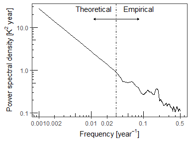
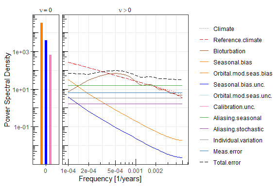
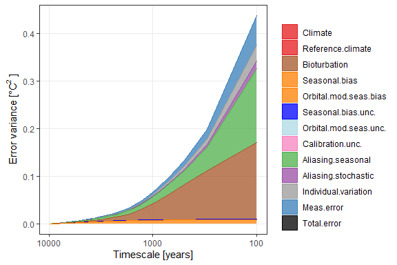

PSEM: Proxy Spectral Error Model.

psem implements the Proxy Spectral Error Model described in the discussion papers:
A spectral approach to estimating the timescale-dependent uncertainty of paleoclimate records – Part I: Theoretical concept. https://doi.org/10.5194/cp-16-1469-2020
A spectral approach to estimating the timescale-dependent uncertainty of paleoclimate records – Part II: Application and interpretation. https://cp.copernicus.org/preprints/cp-2019-153/
Please contact Dr Andrew Dolman <andrew.dolman@awi.de>, Prof. Thomas Laepple <tlaepple@awi.de>, or Dr Torben Kunz <tkunz@awi.de>, at the Alfred-Wegener-Institute, Helmholtz Centre for Polar and Marine Research, Germany, for more information.
This work was supported by German Federal Ministry of Education and Research (BMBF) as Research for Sustainability initiative FONA through the PalMod project (FKZ: 01LP1509C).
Installation
psem can be installed directly from github
if (!require("remotes")) {
install.packages("remotes")
}
remotes::install_github("EarthSystemDiagnostics/psem")Usage
library(psem)Parametrise a proxy error spectrum for a core at 45°N 0°E
Power spectrum for the stochastic climate
# PSD Climate
example.lat <- 45
clim.spec.ex1 <- ModelSpectrum(
freq = NULL,
latitude = example.lat,
variable = "temperature", beta = 1
)
p.clim.spec.ex1 <- PlotModelSpectrum(clim.spec.ex1)
p.clim.spec.ex1
Amplitude of the seasonal cycle
seasonal.amp <- AmpFromLocation(
longitude = 0,
latitude = example.lat,
proxy.type = "degC",
depth.upr = 0, depth.lwr = -50
)
## Returning for closest available coordinates: longitude = -0.5, latitude = 45.5Orbital modulation of the amplitude of the seasonal cycle
orbital.pars <- RelativeAmplitudeModulation(
latitude = example.lat,
maxTimeKYear = 23,
minTimeKYear = 1,
bPlot = FALSE
)Get list of parameters
# sediment accumulation rate for the core
ex.sed.acc.rate <- 10
spec.pars.ex1 <- GetSpecPars(
proxy.type = "Mg_Ca",
T = 1e04,
delta_t = 100,
tau_r = 100,
sig.sq_a = orbital.pars$sig.sq_a,
sig.sq_c = seasonal.amp$sig.sq_c,
tau_b = 1000 * 10 / ex.sed.acc.rate,
tau_s = 1000 * 1 / ex.sed.acc.rate,
N = 30,
tau_p = 7/12,
phi_c = 0, delta_phi_c = 2 * pi / 3,
phi_a = pi / 2,
sigma.cal = 0.25,
sigma.meas = 0.25,
sigma.ind = 1,
clim.spec.fun = "ModelSpectrum",
clim.spec.fun.args =
list(latitude = example.lat, beta = 1)
)Call ProxyErrorSpectrum with these parameters and plot it.
proxy.err.spec <- do.call(ProxyErrorSpectrum, spec.pars.ex1)
PlotSpecError(proxy.err.spec)
## Joining, by = c("component", "ax.grp")
## geom_path: Each group consists of only one observation. Do you need to adjust
## the group aesthetic?
Integrate the error spectrum to get timescale-dependent error.
tsd.error.var <- IntegrateErrorSpectra(proxy.err.spec)
PlotTSDVariance(tsd.error.var)
Get error for a record smoothed to a given timescale, here 500 years.
err.500 <- GetProxyError(tsd.error.var, timescale = 500)
knitr::kable(err.500, digits = 2)| smoothed.resolution | component | f.zero | inc.f.zero | exl.f.zero |
|---|---|---|---|---|
| 500 | Aliasing.seasonal | 0.04 | 0.18 | 0.17 |
| 500 | Aliasing.stochastic | 0.01 | 0.06 | 0.06 |
| 500 | Bioturbation | 0.00 | 0.27 | 0.27 |
| 500 | Calibration.unc. | 0.25 | 0.25 | 0.00 |
| 500 | Individual.variation | 0.02 | 0.08 | 0.08 |
| 500 | Meas.error | 0.03 | 0.11 | 0.11 |
| 500 | Reference.climate | NA | 0.38 | NA |
| 500 | Seasonal.bias | 1.80 | 1.80 | 0.09 |
| 500 | Seasonal.bias.unc. | 0.62 | 0.62 | 0.03 |
| 500 | Total.error | 1.92 | 1.95 | 0.36 |